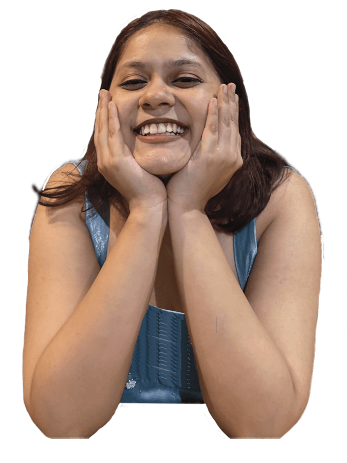
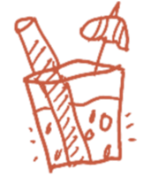
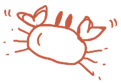
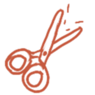
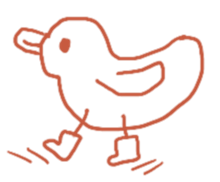
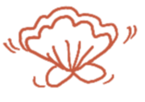
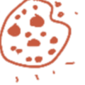
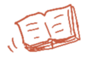

About
I am a concept and brand designer specialising in branding and visual identity. My work captures the essence of people, places, and relationships through a visual style that is expressive, balancing playfulness with intention, without losing depth.
I strive to create engaging brand experiences that feel approachable, empathetic and have great recall value. Helping people interact with brands and form genuine connections with them. I specially enjoy working on tangible, hands-on projects that bring a human touch to design, making experiences feel more personal and real.
Through my designs, I aim to bring diverse stories to light, foster representation, and translate emotions into visuals that resonate across cultures and contexts.
Download resume →Brand strategy, visual identity, packaging, campaigns, character design, art direction
Claude Code, ChatGPT, HTML, CSS, JavaScript, Razorpay, double-entry bookkeeping
English, Hindi